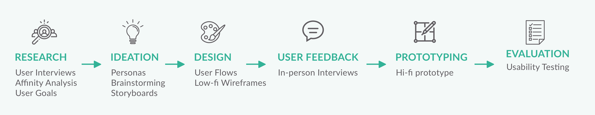
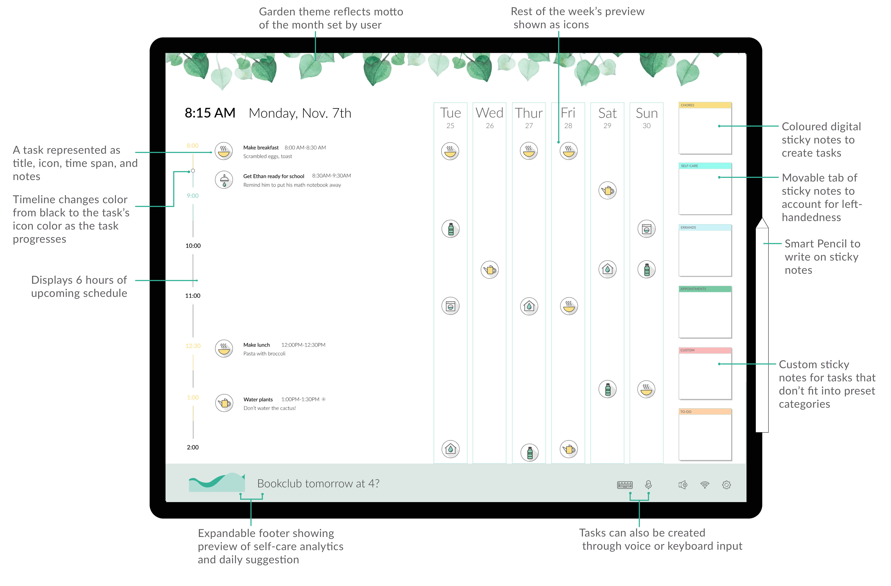

- Start Bootstrap
- Smart Scheduler
- Overview
- Design Objective
- Overview
- Events
- About
- Services
- Contact
SMART SCHEDULER
An AI driven planner that assists stay-at-home parents to find time for hobbies
Overview
Stay-at-home parents have little time for themselves as they juggle household chores and parenting. After conducting user research, we identified time management and task scheduling as major pain points in the routines of stay-at-home parents. The project outcome was Smart Scheduler - an intelligent solution helping stay-at-home parents stay on top of their schedules and find time for their hobbies.
DESIGN OBJECTIVE
To enable stay-at-home parents engage in self-care and manage time effectively.
PROCESS
ROLE
UX Designer
UX Researcher
TEAM
Tanuja Sawant
Rishma Mendhekar
James McDowell
Shubhangi Gupta
DURATION
4 Months
Aug 2018 - Dec 2018
TOOLS
Pen & Paper
Sketch
Adobe XD
MY DETAILED ROLE
In the formative research phase, I conducted 4 semi-structured interviews, and acted as a notetaker for 1 interview. All team members participated in affinity analysis and brainstorming - I brainstormed 15 ideas. Then I worked with my teammates to distill user needs from our findings.
During the Design Iterations, I actively contributed to all design alternatives during the ideation, sketch, and wireframe phases. I finalized personas and made storyboards for one design alternative. After user feedback, the team worked together on the hi-fidelity prototype of the Smart Scheduler.
During the evaluation phase, I acted as a notetaker and facilitator for 2 interviews. Finally, I analysed data by conducting affinity analysis. After the project, I made a clickable prototype from the mobile screens, and improved the clickable prototype for the main screens.
RESEARCH
We performed Task Analysis, Literature Review, Competitive Analysis, and Interviews to learn more about our users. Interviews and Affinity Mapping proved the most resourceful during our information gathering phase.
INTERVIEWS
We conducted semi-structured interviews with 11 stay-at-home parents which helped us to identify patterns and trends among stay-at-home parents and the challenges that they face.

AFFINITY ANALYSIS
In order to make sense of the significant amount of qualitative data that we rapidly collected through interviews, we choose to create an affinity map. Through this, we identified 6 user needs for stay-at-home parents:

PERSONAS
From our interviews, we made two personas to keep us focused while creating our designs.


IDEATION
After analysing our data, we walked the wall and brainstormed 33 design ideas.

DESIGN ALTERNATIVES
Based on urgency of needs and feasibility of design ideas, we chose 3 ideas to explore in greater depth.

SMART SCHEDULER
Addressed Pain Point: Daily Scheduling
Wall mountable screen that enables stay at home parents to keep track of their schedule and engage in self-care activities. Replaces calendars & schedulers.
KINDLY APP
Addressed Pain Point: Child Care
Mobile app that helps parents to find kid-friendly locations and activities based on user ratings.
HOME HELPER
Addressed Pain Point: Chore Delegation
A magnetic board game that can be hung on a wall. Family members advance in the game by doing chores, thus helping the stay at home parent with household work.
USER FEEDBACK
Using the storyboards and wireframes we developed for each design alternative, we conducted a second round of semi-structured interviews with 3 stay-at-home parents to determine which concept fulfilled the most urgent need in their lives and how they would change each design. The results were unanimous — every stay-at-home parent preferred the Smart Scheduler.
STORYBOARDS


MEDIUM FIDELITY PROTOTYPE
HI-FIDELITY PROTOTYPE

Clickable Prototype
Feel free to interact with the final prototype:
Note: The swipe feature to mark a completed task defaults to a dissolve animation in the above prototype due to inadequacy of public Adobe XD prototypes.
EVALUATION
We conducted moderated usability testing by giving 6 participants tasks that represented the core functionality of the system. We asked the participants to think aloud as they went through the prototype.
RESULTS
Overall feedback was positive.
SYSTEM USABILITY SCALE
Average score: 83.8%
DESIRABILITY TESTING
Top 3 words
- Organized
- Personal
- Convenient
Learnings
It was interesting to learn that ease of use and scheduling drew participants more to the design, rather than the self-care graphs, which were the primary functionality.
I learned to deal with circumstances in an effective manner without compromising the quality of designs or evaluations. For example, we designed a prototype on a digital platform to share it with our remote participants, and a paper prototype for our in-person study participants.
I learnt a lot from my team members - we had long and insightful conversations about UX, Tech Industry, and other arbitrary topics.